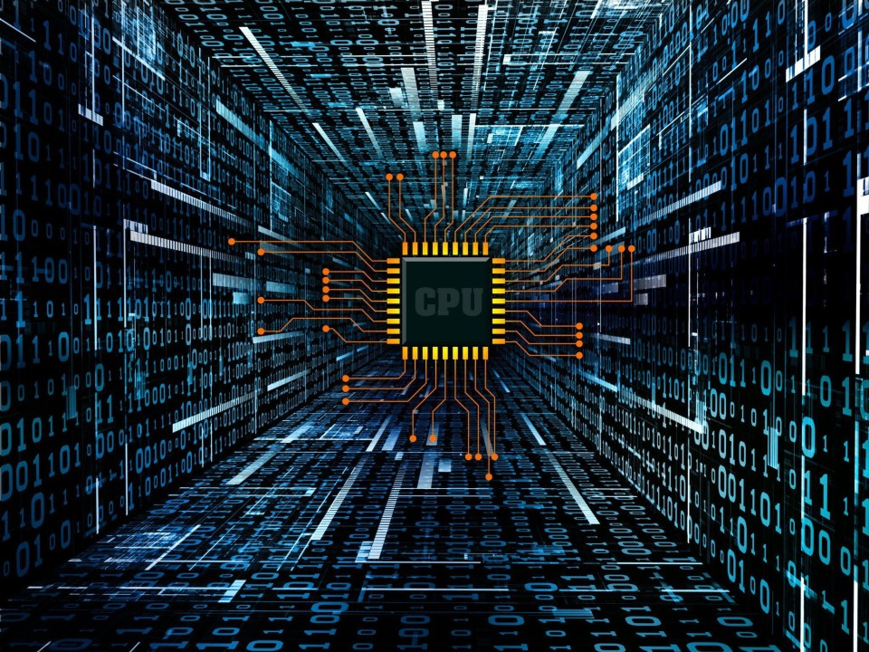

Introduction: Modern technological systems rely on the integration of both hardware and software to deliver intelligent, efficient, and reliable solutions. This combination enables devices to perform complex operations and respond to real-world inputs.
Hardware Definition: Hardware refers to the physical components of a system, including processors, memory units, sensors, and embedded devices. These components provide the foundation upon which all computational processes are executed.
Software Definition: Software consists of programs, algorithms, and instructions that control hardware behavior and enable system functionality. It acts as the interface between the user and the physical components of the system.
Interaction: The interaction between hardware and software is essential for executing tasks and processing data. Software sends commands to hardware, while hardware provides feedback through data and signals.
Embedded Systems: In embedded systems, software is tightly integrated with hardware to perform specific, dedicated functions. These systems are often designed for real-time operation and efficiency.
Performance: System performance depends on how efficiently software utilizes available hardware resources. Optimized code and proper hardware selection can significantly improve speed and responsiveness.
Communication: Hardware components communicate through software-controlled protocols and interfaces. These communication mechanisms ensure proper data transfer between different parts of the system.
Modern Applications: Applications such as robotics, artificial intelligence, and Internet of Things (IoT) systems require seamless coordination between hardware and software to operate effectively.
Optimization: Optimizing both hardware design and software implementation leads to improved system efficiency, reduced power consumption, and increased reliability.
Conclusion: The combination of hardware and software forms the foundation of all modern technological systems. Neither component can function effectively without the other, as hardware provides the necessary physical capabilities while software enables control, intelligence, and adaptability. A well-designed system requires a balanced integration of both aspects to achieve optimal performance, scalability, and reliability. As technology continues to evolve, the relationship between hardware and software becomes even more critical, especially in advanced fields such as embedded systems, robotics, and intelligent automation.
